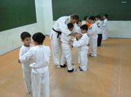
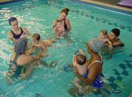
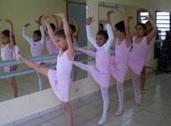

Atividades
Selecionamos atividades apropriadas a cada faixa etária buscando estimular a criatividade e a socialização das crianças, proporcionando momentos de prazer e alegria.
Judô: melhora o preparo psicológico, estimula o respeito ao próximo, aumenta a capacidade aeróbica e o equilíbrio emocional, além da socialização.
Para turmas de Jd. I, II e III.
Informática: aprimora o raciocínio e o senso crítico, aumenta a criatividade e a assimilação de conceitos abstratos. A criança começa brincando no computador, aprende a mexer o mouse, jogar e trabalhar com conceitos básicos como cores, números e formas geométricas, reforçando a aprendizagem formal.
Para turmas de Jd. I, II e III.
Natação: além dos benefícios físicos da natação, como aprimoramento das funções respiratórias, prevenção e combate a alergias, a água é um meio propício para o desenvolvimento da imagem corporal, assim como para o fortalecimento da autoconfiança.
Para todas as turmas.
Ballet: a aula de dança é um convite a vivenciar com prazer a arte do movimento. O movimento é usado como fonte de relaxamento e expansão, proporcionando saúde física e mental, e uma compreensão mais harmônica do corpo.
Para turmas de Jd. I, II e III.
Inglês: as aulas de inglês buscam conexão com o mundo da criança através de músicas, histórias, brincadeiras e situações da vida real. O objetivo é promover uma aprendizagem natural, a familiarização com as palavras e expressões como também a pronúncia correta de sons existentes na língua inglesa.
Para turmas de Jd. I, II e III.
Obs: As aulas de natação, ballet e judô são opcionais e não estão incluídas na mensalidade.
  